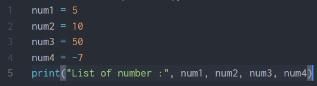
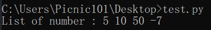
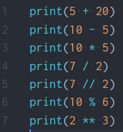
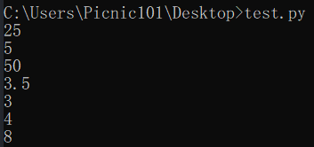
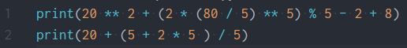
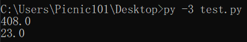

Installation (การติดตั้ง)
ในการติดตั้งภาษา Python นั้น วิธีการคือให้เราเข้าไปที่เว็บไซต์ python.org จากนั้นไปที่หน้า download และเลือกเวอร์ชั่นและระบบปฏิบัติการที่ต้องการ (เนื้อหาในเว็บไซต์นี้จะเป็น Python 3.7.4)

ในตอนติดตั้งนั้นให้เราเลือกช่องที่เขียนไว้ว่า "Add Python 3.7 to PATH" เพื่อที่จะทําให้เราสามารถเรียกใช้ Python ผ่านทาง CMD ของเราได้นั้นเอง

จากนั้นเราสามารถทดสอบได้ว่าเราติดตั้งเรียบร้อยแล้วด้วยการเปิด CMD แล้วพิมพ์คําว่า "py"

ในการรันภาษา Python นั้นเราสามารถรัน Python ได้หลักๆ2วิธีตามนี้เลยครับ
- Interactive Mode คือการที่เราพิมพ์ Code ที่ต้องการจะรันในแต่ละบรรทัดและผลลัพธ์ก็จะออกมาตามแต่ละบรรทัด
- Script Mode คือการที่เรามีไฟล์ .py ที่เป็นโค้ดแล้วนํามารัน
การใช้งาน Interactive Mode ง่ายๆเลยครับเราก็เปิด cmd หรือจะเข้าตัว IDLE ที่มีมาให้หลังจากติดตั้ง Python แล้วก็ได้ครับ


การใช้งาน Script Mode เราสามารถทําได้โดยการเปิด cmd และพิมพ์ "py -3 <ชื่อไฟล์>.py" จากนั้น Python ก็จะนําโค้ดที่อยู่ข้างในไฟล์นั้นมารัน หากเราใช้ IDLE ของ Python ก็สามารถรันได้โดยการกด F5 ครับ


Data Type & Varieble (ชนิดของข้อมูล & ตัวแปร)
ก่อนที่เราจะไปรู้จักกับตัวแปรเราต้องรู้จักกับ ชนิดของข้อมูลใน ภาษา Python กันก่อนครับซึ่งจะมีตามนี้เลย
| Type | Example |
|---|---|
| ตัวอักษรและข้อความ (String) | "Hello world", 'hi', "2019" |
| ตัวเลขจํานวนเต็ม (Integer) | 6, 8, -5, 101, 187 |
| ตัวเลขทศนิยม (Float) | 2.0, 87.1, -5.5 |
| ค่าความจริง (Boolean) | True, False |
| ลิสต์ (List) | [5, 1, "hi", 5.5, True] |
| ดิกชันนารี่ (Dictionary) | {"John": 55, "Bob" : 879} |
| ทูเพิล (Tuple) | (5, 9, 10, 54, 5.1, True) |
| เซ็ท (Set) | {5, 9, 7, 8, True} |
ซึ่งเราสามารถกําหนดค่าตามชนิดข้อมูลข้างต้นนี้ให้กับตัวแปรได้ครับ ยกตัวอย่างเช่น

จากโค้ดข้างบนหมายความว่า
- ตัวแปร name มีค่าเป็นข้อความ(String) ว่า John
- ตัวแปร age มีค่าเป็นจํานวนเต็ม(Int) คือ 5
- ตัวแปร love_tree มีค่าเป็นค่าความจริง(Boolean) คือ True
และเราสามารถเรียกใช้ค่าที่อยู่ข้างในตัวแปรผ่านตัวแปรได้ครับ ยกตัวอย่างเช่น


เรายังสามารถแปลงค่าให้กับตัวแปรได้ด้วย โดยการใช้ Build in function ตามนี้เลยครับ
| ชนิดที่ต้องการจะแปลงให้เป็น | Build in function |
|---|---|
| ตัวเลขจํานวนเต็ม | int() |
| ตัวอักษรและข้อความ | str() |
| ตัวเลขทศนิยม | float() |
ส่วนชนิดของข้อมูลแบบอื่นๆเราจะไปลงรายละเอียดกันในหัวข้อหลังๆนะครับ


เราไม่สามารถแปลงข้อความที่มีตัวอักษรให้เป็น int และ float ได้เพราะจํานวนเต็มและทศนิยมไม่ควรจะมีตัวอักษร ส่งผลให้เกิด ValueError


Input & Output
Input คือการรับข้อมูลเข้ามา และ Output คือการแสดงผลลัพธ์ที่ได้ครับ
- ใน Python การรับ Input จะสามารถทําได้โดยใช้ Build in function ที่ชื่อว่า input() ครับ ซึ่งมันจะรับค่ามาเป็น String ครับ
- ใน Python การแสดงผลลัพธ์ออกมาทางหน้าจอ สามารถทําได้โดยการใช้ Build in function ที่ชื่อว่า print() ครับ
ยกตัวอย่างเช่น


หากเราอยากได้ Input ที่เป็นชนิดตัวแปรอื่นที่ไม่ใช่ String เราก็สามารถใช้ Build in function มาช่วยได้ครับ ยกตัวอย่างเช่น


ในส่วนของ print() เนี่ยมีลูกเล่นเยอะมากๆเลยครับ ผมจะพูดถึงการ print หลายๆตัวแปรหรือค่าหลายๆค่าพร้อมกันก่อนโดยเราสามารถทําได้โดยการใช้ "," ครับ ยกตัวอย่างเช่น
 จริงๆแล้วยังมี String Format ด้วยครับแต่ในตอนนี้เราจะพูดถึงแค่นี้ก่อนส่วนในเรื่องของ String Format เราจะไปพูดในหัวข้อข้อ String Format ครับ
Operators (ตัวดำเนินการ)
Operators หรือตัวดำเนินการ คือการกระทําการทางคณิตศาสตร์ต่างๆกับข้อมูล ซึ่งในภาษา Python จะมีหลักๆอยู่ด้วยกันตามนี้เลยครับ
| การดําเนินการ | สัญลักษณ์ | หน้าที่ |
|---|---|---|
| Addition | + | การบวก |
| Subtraction | - | การลบ |
| Multiplication | * | การคูณ |
| Division | / | การหาร |
| Floor Division | // | หารแบบตัดเศษ |
| Modulo | % | หารเพื่อเอาเศษ |
| Exponentiation | ** | การยกกําลัง |
ซึ่งตัวดําเนินการพวกนี้มีไว้เพื่อให้เราสามารถ คํานวณทางคณิตศาสตร์ในโปรแกรมของเราได้ครับยกตัวอย่างเช่น
 สําหรับ String เราจะขอเก็บไว้พูดในตอนที่เป็นหัวข้อของ String นะครับ
ซึ่งในภาษา Python จะใช้สิ่งที่เรียกกันว่า PEMDAS ครับคือ ลําดับการกําหนดว่าจะทําอะไรก่อนอะไรหลังซึ่งลําดับความสําคัญจะเป็นไปตามนี้เลย
| ลําดับความสําคัญ | การดําเนินการ | ทิศทาง |
|---|---|---|
| 1 | วงเล็บ | ซ้ายไปขวา |
| 2 | ยกกําลัง (**) | ขวาไปซ้าย |
| 3 | คูณ, หาร, หารแบบตัดเศษ, หารเพื่อเอาเศษ (*, /, //, %) | ซ้ายไปขวา |
| 4 | การบวก, การลบ (+, -) | ซ้ายไปขวา |
ยกตัวอย่างเช่น
 ลําดับของสมการอันแรกจะเป็นตามนี้ครับ
- 20 ** 2 + (2 * (80 / 5) ** 5) % 5 - 2 + 8
- 20 ** 2 + (2 * 16 ** 5) % 5 - 2 + 8
- 20 ** 2 + (2 * 1048576) % 5 - 2 + 8
- 20 ** 2 + 2097152 % 5 - 2 + 8
- 400 + 2097152 % 5 - 2 + 8
- 400 + 2 - 2 + 8
- 402 - 2 + 8
- 400 + 8
- 408
ลําดับของสมการอันที่สองจะเป็นตามนี้ครับ
- 20 + (5 + 2 * 5 ) / 5
- 20 + (5 + 10) / 5
- 20 + 15 / 5
- 20 + 3
- 23
Boolean & Condition
Loop
Function
ฟังก์ชัน(Function) คือการแยกโค้ด(Code) ออกมาเป็นส่วนย่อย เพื่อที่จะทําให้เราสามารถเรียกใช้ซ้ำได้โดยไม่ต้องเขียนขึ้นใหม่ ในบางเวลาที่มีการทำงานแบบเดิมซ้ำๆครับ
- Parameter (ตัวรับ) คือ ตัวแปรที่อยู่ใน Function นั้นๆ เป็นตัวคอยรับค่าที่ถูกส่งมายัง function
- Arguments (ตัวส่ง) คือ เมื่อ Parameters รับมาก็จะส่งไปเก็บไว้ใน Arguments ของ Function
User-Defined Fuction
______รูป_______
ตัวอย่างเช่น
______รูป_______
ประเภทของ Function มีอยู่ 2 ประเภท ได้แก่
- Void function คือ function ที่ไม่มีการคืนค่ากลับ
- Fruitful function คือ function ที่มีการคืนค่ากลับ
Void function
______รูป_______
Fruitful function
______รูป_______
ฺBuilt-in Function คือ
function ที่ python มีให้อยู่เเล้ว เราสามารถเรียกใช้ได้เลยครับ เช่น print(), input(), int(), float(), str()
Built-in Function มีอะไรบ้าง
- abs() คือ การ absolute เช่น -5 เมื่อเราใช้ abs(-5) เราจะได้ |-5| ก็จะกลายเป็น 5 ครับ
- len() คือ การนับความยาวของ String เช่น len("Hello") เราจะได้ 5 ครับ
- min() คือ การหาค่าน้อยสุด เช่น min(5, 10, 15, -5) เราจะได้ -5
- max() คือ การหาค่ามากที่สุด เช่น min(50, 1000, -2000) เราจะได้ 1000
- type() คือ การเช็คชนิดว่าตัวนั้นเป็นตัวแปรประเภทอะไรครับ เช่น type("10") เราจะได้ str
- round() คือ การปัดเศษตัวเลข ในระบบจำนวนจริง เช่น round(4.1) เราจะได้ 4 หรือ round(4.6) เราจะได้ 5
- ord() คือ การแปลงจากตัวอักษร(1 ตัวเท่านั้น) ให้เป็นเลข ASCII เช่น ord("a") เราจะได้ 97
- chr() คือ การแปลงเลข ASCII ให้เป็นตัวอักษร เช่น chr(97) เราจะได้ "a"
ตาราง ASCII Link: www.asciitable.com
หากอยากศึกษาเกี่ยวกับ Built-in Function เพิ่มเติมสามารถกดที่ Link นี้ได้เลยครับ: https://docs.python.org/3/library/functions.html
Math module
คือ funciton ทางคณิตศาสตร์อยทีู่่ใน math module เช่น sin, cos, tan, sqrt ซึ่งเวลาเราจะใช้เราจะต้องทำการ import เข้ามาก่อนครับ การประกาศควรจะอยู่นอก function เสมอครับ
______รูป_______
How to call function
การเรียกใช้ module math หลังจากที่เรา import เเล้ว เราจะใช้ได้โดยการพิมพ์คำว่า math.(function ที่เราต้องการเรียกใช้ครับ)
Math function
- math.ceil() คือ การปัดเศษขึ้นเสมอโดยไม่สนว่าจะมากกว่า .5 หรือเปล่า เช่น math.ceil(5.1) เราจะได้ 6
- math.floor() คือ การปัดเศษลงเสมอ เช่น math.floor(5.7) เราจะได้ 5
- math.sqrt() คือ การหา sqrt เช่น math.sqrt(4) เราจะได้ 2.0
- math.pi() คือ การหาค่า pi เช่น math.pi เราจะได้ 3.141592653589793
- math.pow(x, y) คือ การยกกำลัง เช่น math.pow(2, 4) เราจะได้ 16.0
- math.factorial() คือ การหา factorial เช่น math.factorial(10) เราจะได้ 3628800
- math.radians() คือ การแปลงจากค่า องศาเป็น radians เช่น math.radians(30) เราจะได้ 0.5235987755982988
- math.degrees()คือ การแปลงจากค่า radians เป็น องศา เช่น math.degrees(1) เราจะได้ 57.29577951308232
Math function (trigonometry)
- math.sin() คือ การหาค่า sin
- math.cos() คือ การหาค่า cos
- math.tan() คือ การหาค่า tan
- math.radians() คือ การแปลงจาก degrees เป็น radians
- math.degrees() คือ การแปลงจาก radians เป็น degrees
Math function (trigonometry)
คือ math function ที่เป็น trigonometry จะรับ Arguments เป็นหน่วย radians เช่น จะหาค่าของ sin 30 องศา ต้องแปลงเป็น radians ก่อนครับ คือ math.radians(30) เราจะได้ 0.5235987755982988 หรือ math.sin(math.radians(30)) เราจะได้ 0.49999999999994
Math function (logarithmic)
- math.log(x) คือ การหาค่า log base e
- math.log(x, base) คือ การหาค่า log base คือ ค่าที่จะใส่
- math.log2(x) คือ การหาค่า log ฐาน 2
- math.log10(x) คือ การหาค่า log ฐาน 10
เทคนิคของการ import
หากเราไม่อยากพิมพ์คำว่า math.(function) เราสามารถเปลี่ยนได้ เช่น
______รูป_______
เทคนิคของการ import
หากเราต้องการ import แค่ยาง function ของ math module สามารถทำแบบนี้ได้ครับ
______รูป_______
เทคนิคของการ import
หากเราอยาก import ทั้งหมด แต่เราไม่อยากพิมพ์ math. เราสามารถทำแบบนี้ได้ครับ
______รูป_______